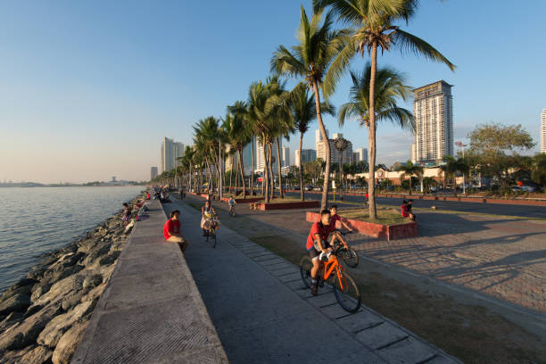
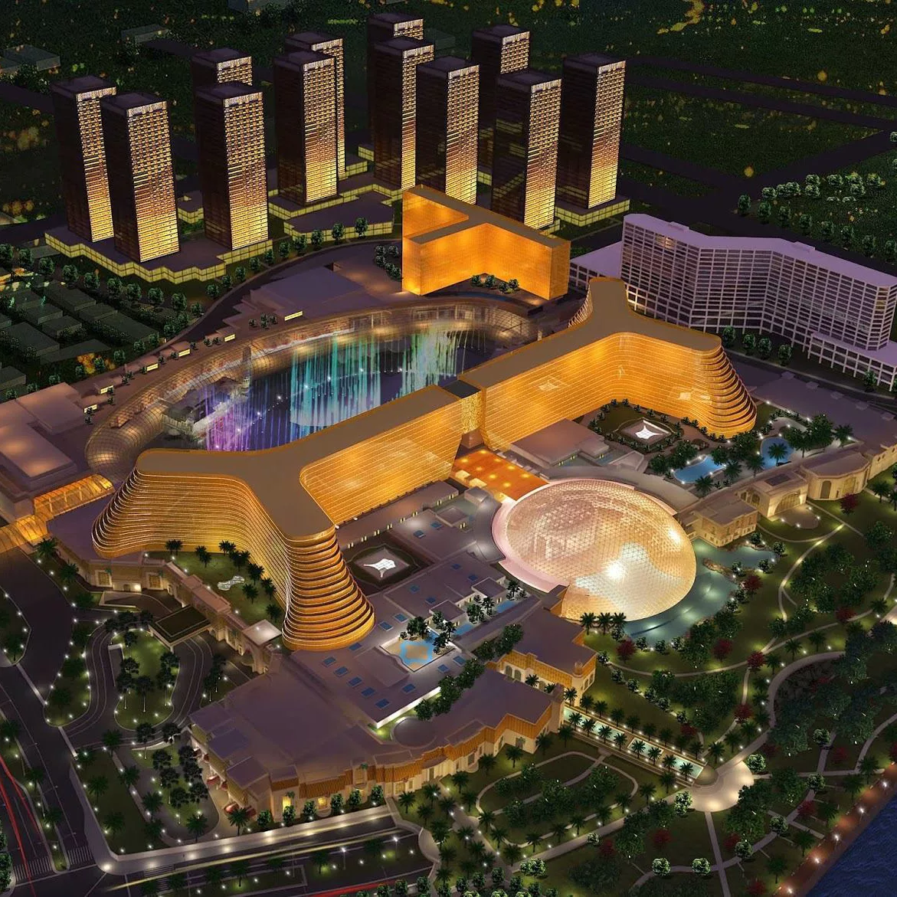
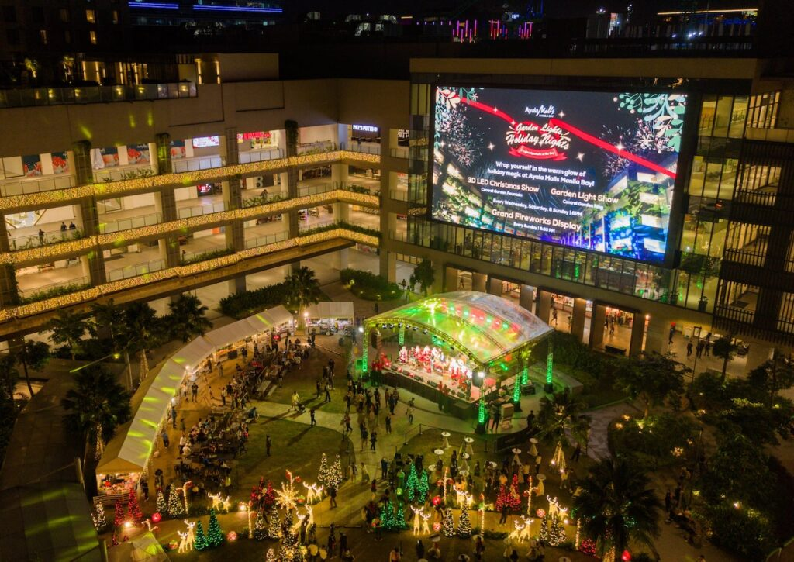

Famous Spots in Manila Bay

Sunset at Manila Bay
The iconic view where the sun dips below the horizon, creating a spectacular mix of colors that draws photographers and tourists alike every evening.

Baywalk
A scenic promenade along Roxas Boulevard offering jogging paths, street food stalls, and a relaxing view of the bay, perfect for evening strolls.

Okada Manila
A luxurious resort and casino that offers world-class entertainment, fine dining, and an impressive fountain show visible from the bay.

Nighttime Light Show
Manila Bay comes alive at night with colorful lights reflecting on the water, accompanied by musical fountain displays, creating a magical atmosphere for visitors.